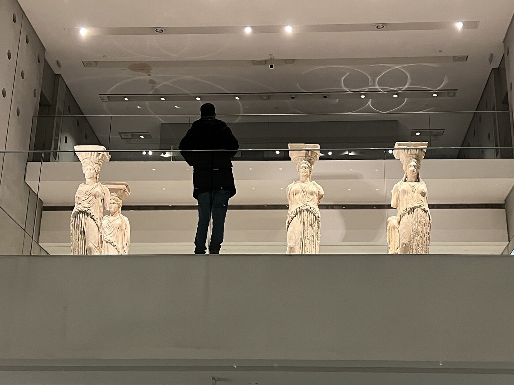
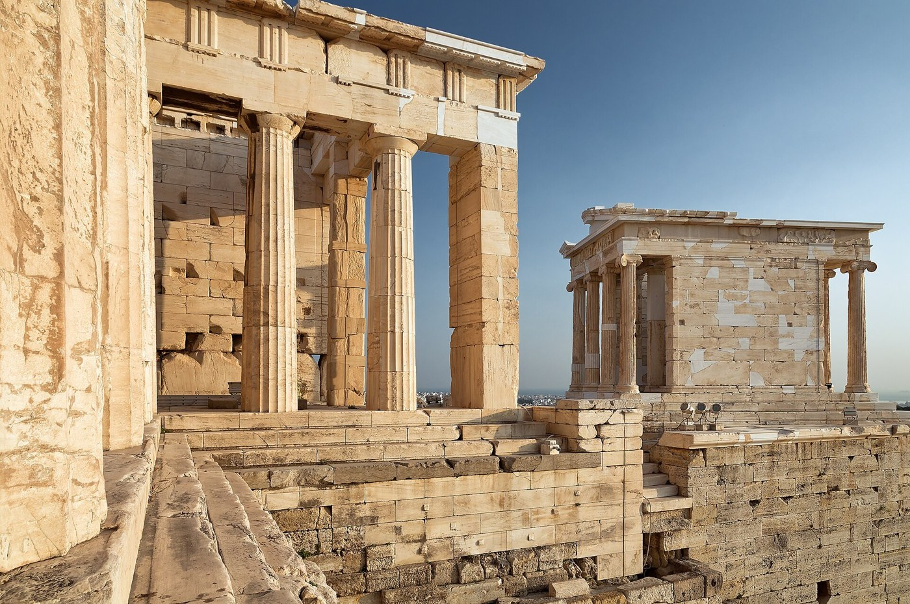
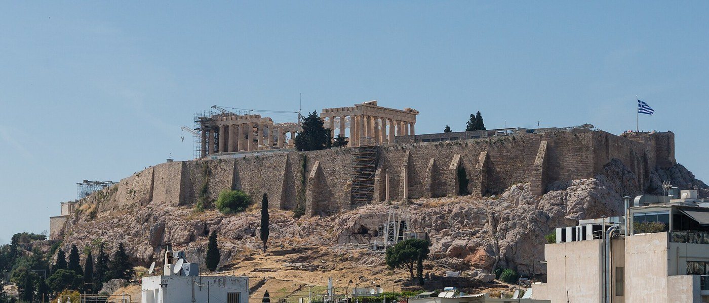
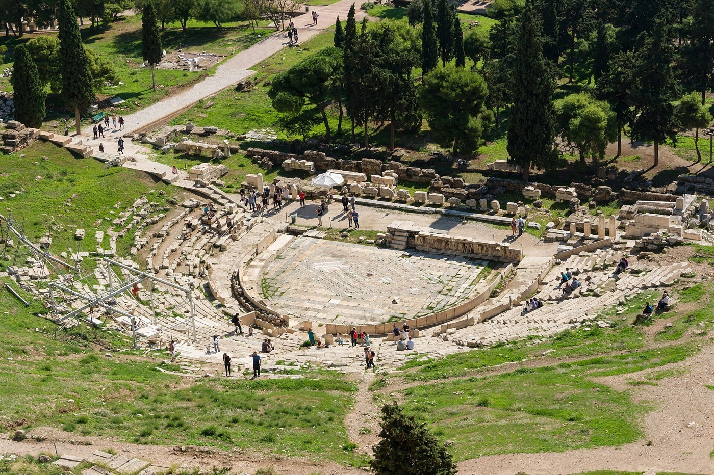
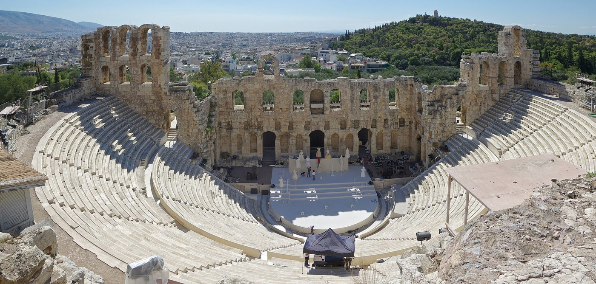
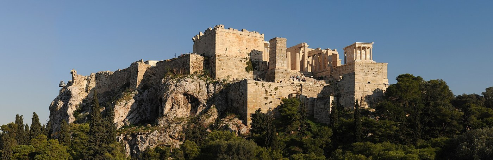

路线总览
总统酒店 → Akropoli → 博物馆 → 卫城遗址
公共交通优先推荐地铁：从酒店步行到 Panormou 或 Ambelokipi，乘 3 号线到 Syntagma，换 2 号线到 Akropoli。Akropoli 出站后先进入博物馆，午后步行上卫城。
01酒店出发
步行到 3 号线地铁站，轻装上路。
步行到 3 号线地铁站，轻装上路。
02地铁换乘
Syntagma 换 2 号线，Akropoli 下车。
Syntagma 换 2 号线，Akropoli 下车。
03先看博物馆
用 2 到 2.5 小时理解真品和建筑线索。
用 2 到 2.5 小时理解真品和建筑线索。
04步行上卫城
山门、帕特农神庙、女像柱和剧场串联看。
山门、帕特农神庙、女像柱和剧场串联看。

第一站
卫城博物馆：先把遗址读懂
夏季按博物馆官网公布时间规划：4 月 1 日至 10 月 31 日，周一 9:00-17:00，周二至周日 9:00-20:00，周五延长至 22:00。建议上午进馆，避开一部分团队客流。
重点顺序斜坡展厅 → 古风时期展厅 → 女像柱 → 帕特农神庙展厅 → 地下考古遗址。
拍照规则多数公共展区可拍照，但不用闪光灯、三脚架或专业灯；古风时期展厅禁止拍照。
停留时间重点看 2-2.5 小时；喜欢雕塑和建筑细节可留 3 小时以上。
推荐节奏
一日行程时间轴
08:15
总统酒店出发，步行到 Panormou 或 Ambelokipi 地铁站。
09:00
抵达 Akropoli 站，先进入卫城博物馆。
09:10-11:40
博物馆主展线：斜坡展厅、古风时期展厅、女像柱、帕特农神庙展厅。
11:40-12:20
博物馆餐厅或附近轻食，补水、防晒、整理体力。
12:20-12:45
沿 Dionysiou Areopagitou 步行到卫城入口，核对预约时段。
12:45-15:20
山门、雅典娜胜利神庙、帕特农神庙、厄瑞克忒翁和观景点。
15:20 后
按体力去阿瑞奥帕古斯山拍照、普拉卡休息，或原路返程。
第二站
卫城遗址：把博物馆里的线索放回原址
卫城遗址夏季常见开放时段为 08:00-20:00，具体入场时段、票价和临时高温管控以希腊官方 e-ticket 页面当日显示为准。博物馆票和遗址票相互独立。




返程加餐
如果还有体力，去拍一张全景
阿瑞奥帕古斯山方向可以拍到卫城全景。日落前后光线漂亮，但岩石很滑、人也多；不建议穿凉鞋或赶时间硬上。
轻松返程Akropoli 坐 2 号线到 Syntagma，换 3 号线回酒店附近。
晚餐区域Koukaki 比 Plaka 更松弛；Plaka 更经典但游客密度高。

夏季提醒
把体力留给山上
水进入遗址前补水；山上补给点少。
鞋穿防滑运动鞋；大理石地面会滑。
防晒帽子、墨镜、防晒霜都要带。
老人儿童避开正午，遗址只走核心点也够。
购票博物馆和遗址票分开买，出发前核对官方时段。